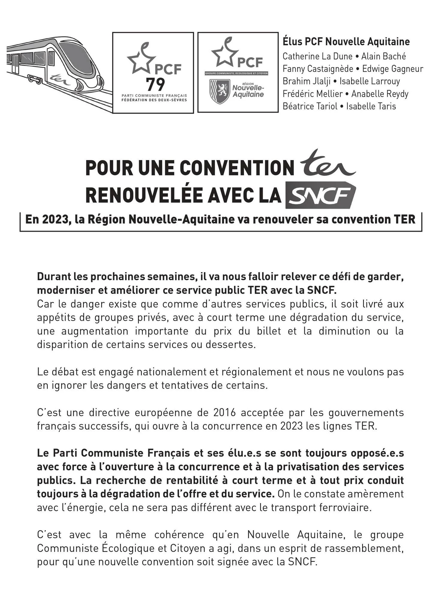
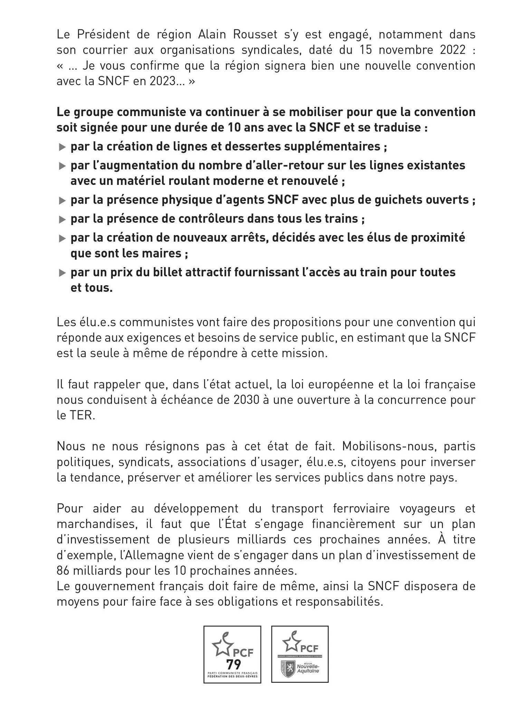

Communiqué de la fédération
TER en Nouvelle-Aquitaine. Pour une convention renouvelée avec la SNCF
Date indiquée par Facebook · 8 décembre 2022
Repères éditoriaux
Nous avons défendu un service public ferroviaire à l’échelle de la Nouvelle-Aquitaine. Le document fédéral expose cette proposition et son opposition à l’ouverture à la concurrence.
Texte conservé avec la publication
Contre l'ouverture à la concurrence et la privatisation des services publics, le PCF79 est pour une convention TER renouvelée avec la SNCF en Nouvelle-Aquitaine


Sources
Archive rouge · export Facebook · AR-0002-FB-01799
À lire aussi · Pour que les TER restent un service public. La position des élus communistes régionaux